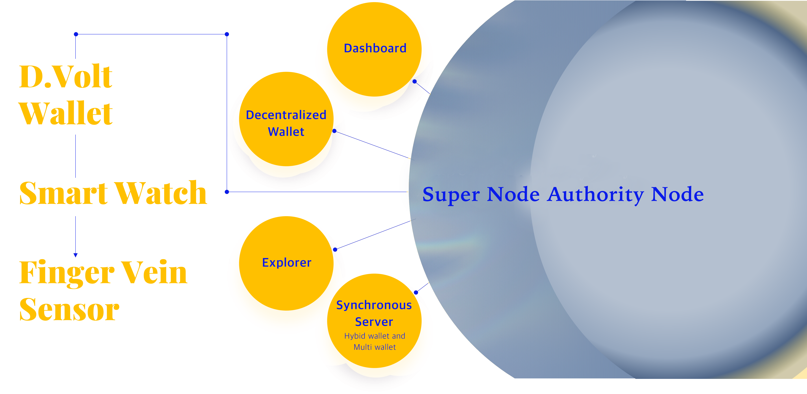

7. Tokenomics
- Name: NewBit
- Ticker Symbol: NEBTC
- Total Supply: 21,000,000
- Airdrops for Nodes: 10,000,000 (Locked eternally, only used as the criteria for setting up a node)
- Minting Rewards: 11,000,000 (Circulating Supply)
7.1 Airdrops for Nodes
Of 21,000,000 NEBTC, 10,000,000 NEBTC are airdropped to set up nodes. To run an x node, you should stake as many as NEBTC coins airdropped.
※ How to calculate the number of coins to stake when setting up a node
$$ If \frac{100*p}{2^{a-1}}\leq M \ Then\\ \qquad A=\frac{100}{2^{a-1}} $$
$$ Else\\ \qquad A=\frac{M}{P} $$
※ Number of coins to stake (A)
| Series | Number of Packages available | Airdrop | NEBTC to stake (A) |
|---|
| X1 | 10,000 | 100 | A=0 |
| X2 | 20,000 | 50 | A≤50 |
| X3 | 40,000 | 25 | A≤25 |
| X4 | 80,000 | 12.5 | A≤12.5 |
| X5 | 160,000 | 6.25 | A≤6.25 |
| X6 | 320,000 | 3.125 | A≤3.125 |
| X7 | 640,000 | 1.5625 | A≤1.5625 |
| X8 | 1,280,000 | 0.78125 | A≤0.78125 |
| X9 | 2,560,000 | 0.390625 | A≤0.390625 |
| X10 | 5,120,000 | 0.1953125 | A≤0.193125 |
The holder of X1 package will be provided with an airdrop of 100 NEBTC. X1 holders do not need to stake any additional NEBTC coins to run a node. 10,000 packages for X1 series are available.
The holder of X2 package will be provided with an airdrop of 50 NEBTC. X2 holders need to stake additional 50 NEBTC (or less) coins to run a node. 20,000 packages for X2 series are available.
The holder of X3 package will be provided with an airdrop of 25 NEBTC. X3 holders need to stake additional 25 NEBTC (or less) coins to run a node. 40,000 packages for X3 series are available.
The holder of X4 package will be provided with an airdrop of 12.5 NEBTC. X4 holders need to stake additional 12.5 NEBTC (or less) coins to run a node. 80,000 packages for X4 series are available.
The holder of X5 package will be provided with an airdrop of 6.25 NEBTC. X5 holders need to stake additional 6.25 NEBTC (or less) coins to run a node. 160,000 packages for X5 series are available.
The holder of X6 package will be provided with an airdrop of 3.125 NEBTC. X6 holders need to stake additional 3.125 NEBTC (or less) coins to run a node. 320,000 packages for X6 series are available.
The holder of X7 package will be provided with an airdrop of 1.5625 NEBTC. X7 holders need to stake additional 1.5625 NEBTC (or less) coins to run a node. 640,000 packages for X7 series are available.
The holder of X8 package will be provided with an airdrop of 0.78125 NEBTC. X8 holders need to stake additional 0.78125 NEBTC (or less) coins to run a node. 1,280,000 packages for X8 series are available.
The holder of X9 package will be provided with an airdrop of 0.390625 NEBTC. X9 holders need to stake additional 0.390625 NEBTC (or less) coins to run a node. 2,560,000 packages for X9 series are available.
The holder of X10 package will be provided with an airdrop of 0.1953125 NEBTC. X10 holders need to stake additional 0.1953125 NEBTC (or less) coins to run a node. 5,120,000 packages for X10 series are available.
7.2 Rewards for Nodes
There are two types of node rewards;
Minting rewards
D.Volt rewards
7.21 Minting Rewards
Of 21,000,000 NEBTC, 11,000,000 NEBTC are distributed as rewards to ‘x nodes’ autonomously in accordance with rules encoded via smart contracts. To receive minting rewards, every x node should make a choice of either participating in an existing node pool or building his own node pool. Only x nodes who are in a node pool are qualified for minting rewards.
Minting rewards are programmed to be offered to x nodes at a certain rate, in accordance with the amount of the sales of a D.Volt package. As the sales increase, the number of nodes may increase accordingly. A maximum of 1,500 to 1,000 NEBTC can be given out a day – which can be changed by voting.
Minting Rewards Distribution Rules
Each X Node receives minting rewards up to a maximum of 2000 times.
| Series | When to reward | Rewards | Total rewards | To Whom |
|---|
| X1 | Every 10 sales | 1500 | 1,500,000 | X1 |
| X2 | Every 20 sales | 1300 | 1,300,000 | X1, X2 |
| X3 | Every 40 sales | 1200 | 1,200,000 | X1, X2, X3 |
| X4 | Every 80 sales | 1000 | 1,000,000 | X2, X3, X4 |
| X5 | Every 160 sales | 1000 | 1,000,000 | X3, X4, X5 |
| X6 | Every 320 sales | 1000 | 1,000,000 | X4, X5, X6 |
| X7 | Every 640 sales | 1000 | 1,000,000 | X5, X6, X7 |
| X8 | Every 1,280 sales | 1000 | 1,000,000 | X6, X7, X8 |
| X9 | Every 2,560 sales | 1000 | 1,000,000 | X7, X8, X9 |
| X10 | Every 5,120 sales | 1000 | 1,000,000 | X8, X9, X10 |
For every 10 X1 package sold, 1,500 NEBTC are distributed as rewards equally to x nodes who have X1 NFT.
For every 20 X2 package sold, 1,300 NEBTC are distributed as rewards equally to x nodes who have X1 and X2 NFT.
For every 40 X3 package sold, 1,200 NEBTC are distributed as rewards equally to x nodes who have X1, X2 and X3 NFT.
For every 80 X4 package sold, 1,000 NEBTC are distributed as rewards equally to x nodes who have X2, X3 and X4 NFT.
For every 160 X5 package sold, 1,000 NEBTC are distributed as rewards equally to x nodes who have X3, X4 and X5 NFT.
For every 320 X6 package sold, 1,000 NEBTC are distributed as rewards equally to x nodes who have X4, X5 and X6 NFT.
For every 640 X7 package sold, 1,000 NEBTC are distributed as rewards equally to x nodes who have X5, X6 and X7 NFT.
For every 1280 X8 package sold, 1,000 NEBTC are distributed as rewards equally to x nodes who have X6, X7 and X8 NFT.
For every 2560 X9 package sold, 1,000 NEBTC are distributed as rewards equally to x nodes who have X7, X8 and X9 NFT.
For every 5120 X10 package sold, 1,000 NEBTC are distributed as rewards equally to x nodes who have X8, X9 and X10 NFT.
7.22 D.Volt Rewards
D.Volt rewards are to share profits generated in the D.Volt Wallet ecosystem. 75% of the profits are given out as D.Volt rewards to x nodes, while 25% are given out to super nodes and authority nodes in proportion to the number of x nodes in the node pool.
※ Formula for calculating Vein-X rewards to X nodes
$$ T_p=\sum_{a=1}^{10}\frac{(a+2)*b}{100*T_p} $$
or
$$ 1=\sum_{a=1}^{10}\frac{(a+2)*b}{100} $$
or
$$ b=\sum_{a=1}^{10}\frac{100}{a+2} $$
(However, a is applied to the formula only in case of Xan>0 to calculate b)
$$ X_Ra=\frac{T_p*((a+2)*b)}{X_an} $$
$$ where\quad T_p=Total\quad profits \\
\qquad X_an:\quad Total\quad number\quad of\quad X\quad nodes\quad with\quad X_a\quad series\quad (a = 1, 2, 3, …, 10) \\
\qquad X_Ra:\quad Vein-X\quad rewards\quad for\quad X_a $$
Super nodes can increase the reputation by sharing rewards with the pool members or by donating part of them to society. Donations will be 100% returned at the time of the next rewards.
Donations are managed separately in the donation account. Super nodes can suggest ideas for how to spend the donations. Authority nodes should make a final decision in agreement before spending.
The flow of funds can be traced in Explorer and details will be posted on the Website.
System Architecture

Explorer
A service that can display the details of all transactions created on the blockchain network.
Dashboard
A service that monitors the recent block time, average block time, and gas price of nodes running on the network. If you check transaction information through Explorer, check the network status through Dashboard.
Decentralized Wallet
A wallet service in which each individual manages their private key through Mnemonic as a decentralized wallet. It allows pure P2P digital transactions without a separate entity (institution) that manages assets.
Synchronous Server
A service that directly connects and processes the address, deposit, and withdrawal requests required for hybrid wallet, multi-wallet and various service operations with the blockchain node.
Hybrid Wallet
All transaction details are recorded on the block chain, and transaction details are provided by using the DB as an auxiliary ledger. In addition, if necessary, a wallet service that provides a side-chain function through Wrapping/Un-Wrapping
Multi Wallet
A wallet service that connects legacy business and blockchain business models by providing various APIs to be linked with external systems such as finance, payment, and communication